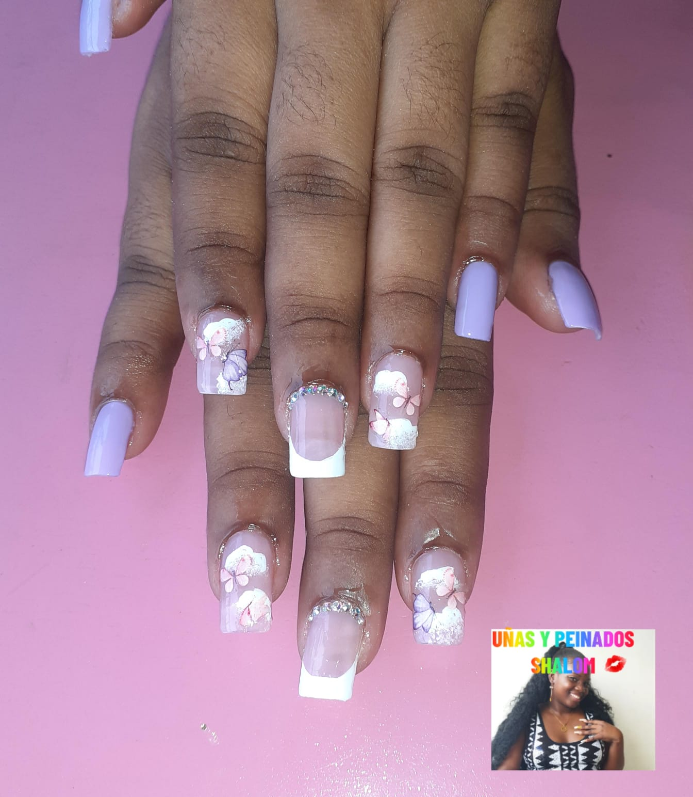

Es un emprendimiento que nace por la necesidad del cuidado y la Estética de las uñas. Nuestras técnicas están basadas en las exigencias de nuestro usuario para brindarle una experiencia satisfactoria en cuanto a la preservación de unas uñas sanas y bonitas.
Contamos con una línea de tratamiento para las uñas para prevenir los hongos los malos olores sensibilidad
en las uñas, uñeros.
Tenemos a la disposición de los clientes una amplia variedad de estilos y diseños para lo relacionado con la decoración de las uñas estamos actualizados con las ultimas practicas para lo referente antes mencionado.

Las 5 técnicas de uñas
Para nadie es un secreto que la decoración de uñas y los accesorios para manicuras tienen gran demanda en el mercado.Es por eso que hoy os traemos las 5 técnicas de uñas más utilizadas, de esta manera podréis escoger cuales son las que más os gustan.
Las uñas han tomado gran importancia debido a que son consideradas una carta de presentación que aporta feminidad, higiene y, sobre todo, personalidad.
Como apasionada de la belleza es importante que aprendas las nuevas técnicas que se van incorporando en el sector para responder a las necesidades de tus clientes.
Uñas Tradicional
El esmalte de uñas tradicional se pinta sobre la placa de las uñas, normalmente en varias capas, y luego se seca al aire. El esmalte de uñas convencional es un polímero disuelto en un disolvente. Durante el proceso de secado, el disolvente se evapora, y el polímero se endurece.
Uñas Semipermantes
Un esmalte semipermanente es un tipo de manicura que se hace cada 2-3 semanas; a diferencia de los esmaltes clásicos, la manicura semipermanente no requiere que se retire y se vuelva a poner de nuevo con tanta frecuencia, todo es gracias a su durabilidad.
Uñas en Gel
Uñas de gel: todo aquello que debes saber para una manicura
Las uñas de gel son un tipo de uña postiza hecha con un material acrílico que se adhiere a la uña mediante un pegamento específico con el fin de garantizar una manicura perfecta incluso en casos difíciles de reconstrucción como son pérdida de uña, uñas comidas o uñas quebradizas.
Uñas Acrilicas
Es la combinación de un líquido especial, llamado líquido acrílico, y un polímero en polvo. La mezcla se endurece al aire con rapidez, formando una uña postiza muy resistente. El moldeado se realiza directamente sobre la uña natural, por eso también se las llama uñas esculpidas.
Uñas esculpidas
Las uñas esculpidas en polygel son extensiones artificiales de las uñas realizadas con geles de construcción, utilizando moldes para dar la forma y extensión deseada. Como la palabra lo indica, lo que se hace es “esculpir” una uña artificial sobre la uña natural, fijándola con luz ultravioleta.